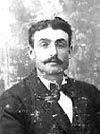

fiche familiale
*******************************************************************************
Samuel-Anselme Renaud
décède à l'âge de 73 ans.
Naissance le 4 février 1845 à Aylmer
Baptême le 25 février 1845 à Mission d'Aylmer
Dit Sam. Parrain Jean Chrysostome, marraine sa tante Marie Renaud.
Décès le 15 mars 1918 à Ste-Cécile de Masham (La Pêche)
Sépulture à Ste-Cécile de Masham (La Pêche)
Père: François-Xavier Renaud (Reneau)
Mère: Louise Decelles
Mariage: vers 1865 à Ste-Cécile de Masham (La Pêche)
1ière épouse: Ann-Eléonor Ryan
décède à l'âge de 59 ans.
Naissance le 4 mai 1847
D'origine Irlandaise. Dite Eléonor et aussi Anne
Décès le 28 décembre 1906 à Ste-Cécile de Masham (La Pêche)
Sépulture à Ste-Cécile de Masham (La Pêche)
Père: Michael O'Ryan
Mère: Cathelin Quinn
*******************************************************************************
Enfant 1 Marie Renaud
Naissance en 1870 à Ste-Cécile de Masham (La Pêche)
décède en 1870 à Ste-Cécile de Masham (La Pêche)
-------------------------------------------------------------------------------
Enfant 2 Michel Renaud
décède à l'âge de 80 ans.
Naissance le 23 mars 1871 à Ste-Cécile de Masham (La Pêche)
Baptême le 26 mars 1871 à Ste-Cécile de Masham (La Pêche)
Parrain Michel Ryan, marraine Louise Duclos.
Décès en 1951 à Ste-Cécile de Masham (La Pêche)
Mariage le 9 juillet 1901 à Ste-Cécile de Masham (La Pêche)
Conjointe: Vénérance Renaud
n. en 1882 d. 15 mars 1918 de la grippe Espagnol.
-------------------------------------------------------------------------------
  |
Enfant 3 Catherine Renaud décède à l'âge de 45 ans. Naissance le 15 juin 1872 à Ste-Cécile de Masham (La Pêche) Baptême le 30 juin 1872 à Ste-Cécile de Masham (La Pêche) Parrain François Philip, marraine Delphine Philip. Décès le 18 mars 1918 à Ste-Cécile de Masham (La Pêche) Décédée de la grippe Espagnol en même temps que son fils Isidore et de ses belles-soeurs Vénérance Renaud et Hedwige Martineau. Sépulture à Ste-Cécile de Masham (La Pêche)(ses ancêtres) Mariage le 26 avril 1893 à Ste-Cécile de Masham (La Pêche) Conjoint: Isaïe Baudoin Beaudoin n. 3 mars 1871 d. 7 janvier 1940. (sa famille) |
Enfant 4 Samuel Renaud
décède à l'âge de 80 ans.
Naissance le 23 juin 1875 à Ste-Cécile de Masham (La Pêche)
Baptême le 11 juillet 1875 à Ste-Cécile de Masham (La Pêche)
Dit Sam. Parrain André Renaud, marraine Julie Renaud.
Décès le en 1956 à Ste-Cécile de Masham (La Pêche)
Sépulture à Ste-Cécile de Masham (La Pêche)
Mariage le 10 août 1909 à Ste-Cécile de Masham (La Pêche)
Conjointe: Henriette Lamothe
n. 10 fév 1876 d. en 1953
Ils furent parrain et marraine d'Antoine (Tony) Beaudoin
-------------------------------------------------------------------------------
Enfant 5 Liza Renaud
Naissance le 21 dec 1876 à Ste-Cécile de Masham (La Pêche)
-------------------------------------------------------------------------------
Enfant 6 Marguerite-Bertha Renaud
Naissance le 17 fév 1880 à Ste-Cécile de Masham (La Pêche)
-------------------------------------------------------------------------------
Enfant 7 Valérie Renaud
Naissance le 27 avril 1881 à Ste-Cécile de Masham (La Pêche)
Décès le 9 jan 1889 à Ste-Cécile de Masham (La Pêche)
-------------------------------------------------------------------------------
Enfant 8 Joseph Renaud
décède à l'âge de 97 ans.
Naissance le 19 fév 1883
Décès en 1981 à New-Liskeard, ON
-------------------------------------------------------------------------------
Enfant 9 Thomas Renaud
décède à l'âge de 637 ans.
Naissance le 10 mai 1885
Décès en 1948
-------------------------------------------------------------------------------
Enfant 10 François-Xavier Renaud
décède à l'âge de 61 ans.
Naissance 4 sep 1886.
Décès en 1948 à Ste-Cécile de Masham (La Pêche)
Sépulture à Ste-Cécile de Masham (La Pêche)
Mariage: 22 septembre 1919 à Ste-Cécile de Masham (La Pêche)
Conjointe: Dorilda Gauthier
n. en 1896 d. en 1978
*******************************************************************************
Mariage le 28 octobre 1908 à Ste-Cécile de Masham (La Pêche)
Âge de l'époux 63 ans, âge de l'épouse 55 ans.
2ème épouse: Agnès Desjardins
décède à l'âge de 77 ans.
Naissance en 1853.
Décès le 7 juillet 1930 à Ste-Cécile de Masham (La Pêche)
Sépulture à Ste-Cécile de Masham (La Pêche)
Veuve de Nobert Laferrière
*******************************************************************************